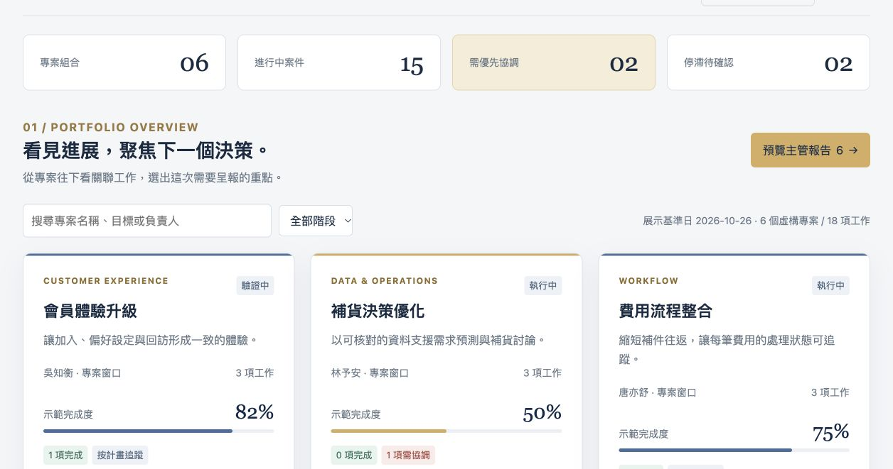
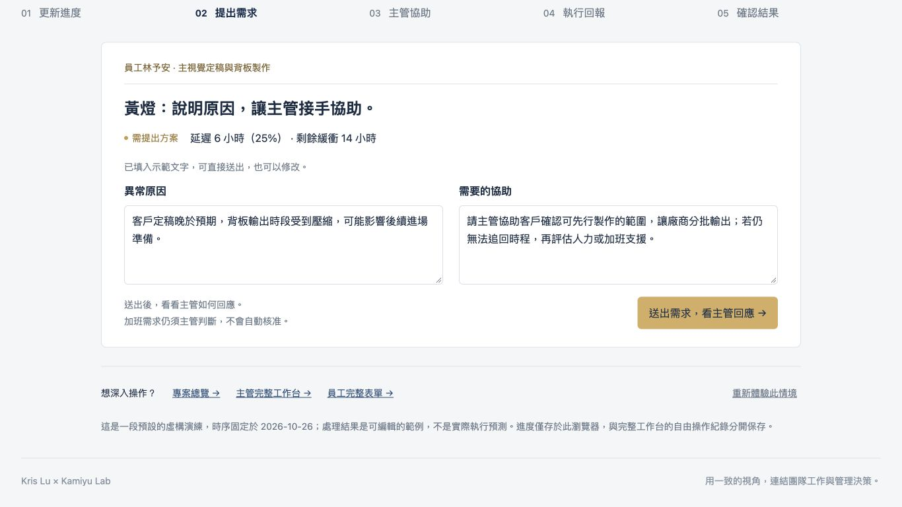

問題
有進度資料，還要知道哪裡需要介入。
這個作品處理的問題是：日常紀錄分散在不同工作項目時，單看完成度不容易辨識停滯、風險與待決事項。管理視角需要同時保留進度依據、負責人及下一步，也能回到個別工作核對。
專案管理儀表板
專案總覽需要回答：哪裡需要介入、由誰處理，以及決策之後如何追蹤。這個案例從管理需求與資料視角，說明儀表板的設計取捨與公開情境。
Kris Lu / Kamiyu Lab · 獨立製作公開展示 · 全新虛構資料
ENTERPRISE WORK
整合分散的專案紀錄，建立 PMO 儀表板與週報呈現，整理進度、負責人、風險與下一步。原工作版本曾經歷協作優化。
PUBLIC WORK
另行重製介面與全新虛構資料，並設計員工回報異常、主管回應與結果追蹤的互動情境，供讀者體驗管理邏輯。

問題
這個作品處理的問題是：日常紀錄分散在不同工作項目時，單看完成度不容易辨識停滯、風險與待決事項。管理視角需要同時保留進度依據、負責人及下一步，也能回到個別工作核對。
我的責任
我負責管理需求釐清、儀表板建置與持續迭代，整理專案與案件的關聯、風險、負責人與下一步。原工作版本曾經歷協作優化；公開版則另外重製介面、資料與互動情境。
關鍵判斷
總覽保留完成度與有效樣本數，讓資訊可以回到細節。在另外設計的公開情境中，主管選定方案不會自動讓燈號轉綠；回填執行結果與完成預估後才重新判定，並保留原訂時程與當時的決策。
推動方式
公開工作台提供專案總覽、案件追蹤及會議焦點，可依部門、負責人與狀態查看工作，再挑選專案組成管理報告。異常情境以兩個預填欄位承接員工回報，再由主管回應方案、負責人與追蹤時間。
交付與目前狀態
企業工作包含 PMO 儀表板與週報呈現。公開版提供可操作的虛構專案總覽、案件追蹤、會議焦點與異常協作情境；不連接企業系統。員工與主管往返情境是公開展示設計，不列為既有客戶導入成果。
NEW SCENARIO / MANAGEMENT DECISIONS
在「城市設計展」互動情境中，員工先維護工作完成預估。系統判為黃燈或紅燈時，會出現「異常原因」「需要的協助」兩個預填欄位，可直接送出體驗，也能修改後交主管協助。主管再比較分批製作、調整分工與額外製作時段，留下理由、負責人與追蹤時間。
選定方案不會自動轉綠。回填執行結果與完成預估後，系統才重新判定燈號；原訂時程與當時決策保留在紀錄中。

引導情境只需確認異常原因與需要的協助，時程與工作量沿用進度更新；完整工作台另保留處理方案、解決時間與支援類型等詳細欄位。主管能同意、調整、不採支援或請員工補充資料，並指定負責人與追蹤時間。員工看到回應後回填執行結果；提請解除時，仍須由主管確認。
角色切換僅在同一瀏覽器展示往返流程，沒有正式帳號、Google Sheet 連線或跨裝置通知。
另一項綠燈工作是「活動結束後撤場」：原訂夜間安排也可能需要額外投入，與延遲補救分開判斷。示範記錄預計及實際額外人時，不進行薪資計算或正式加班核准。
示範黃燈門檻為預估延遲率達 20% 或緩衝消耗達 80%，可在畫面調整。預估超出最晚交付為紅燈；缺少預估或資料過久未更新則為待確認。此版採固定曆時，未包含工作日曆與自動相依排程。
這是另行設計的虛構情境，用來展示管理需求如何轉成工具；不列為既有客戶導入成果。
PORTFOLIO & REPORTING
既有「專案總覽」「案件追蹤」「會議焦點」仍可使用。查看關聯工作、編輯會議重點，再挑選專案與呈報順序，預覽 A4 報告。
PUBLIC DEMO
既有 6 個虛構專案、18 項工作，另新增 1 個活動情境與 4 項工作。展示日期可調整；所有修改只存在瀏覽器，沒有公司資料或後端連線。數字用於展示互動，不代表實際工作成效。